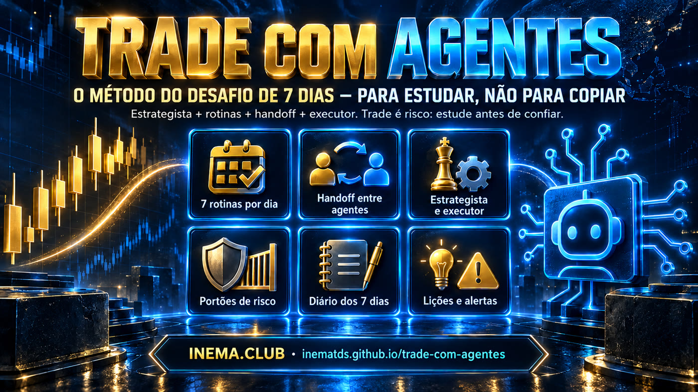

Cómo alguien armó agentes con rutinas, handoff y un ejecutor para operar US$ 10.000 en acciones. No confío en esto para operar; aquí aprendemos de lo que él hizo.

El trading es de alto riesgo, tiene demasiadas variables y siempre hay alguien del otro lado con información que nosotros no tenemos. No es asesoría financiera, no es una estrategia validada y no es una invitación a poner dinero en un robot. El propio desafío terminó perdiendo contra el S&P 500. El objetivo aquí es aprender cómo se armaron los agentes, dónde se atascaron y qué cambió en el camino.
Fuente: video en YouTube “I Gave GPT 6 Astra $10,000 to Trade Stocks...And This Happened”. Todo es paráfrasis; números “según lo relatado en el video”, sin auditoría.
US$ 10.000 de dinero real, 7 sesiones de bolsa, meta de superar al S&P 500. El autor podía hacer hasta dos cambios por día, pero no podía apagar el sistema.
Siete despertares por sesión, cada uno con una sola pregunta: qué vigilar, si entra, si sale, si cerró todo.
Cada rutina lee la nota de la anterior y deja otra para la siguiente. Todo en el mismo hilo: parece un solo agente.
Cuando el modelo se negó a ejecutar órdenes, pasó a ser solo estratega y empezó a enviar las recomendaciones por correo a un bot que opera en Alpaca.
Horarios en Central Time (sesión de 8:30 a 15:00 CT). En cada despertar: lee el handoff → revisa la cuenta → decide → escribe el próximo handoff.
Nada de esto viene con código en este repositorio. Las plantillas explican la arquitectura; para probar, solo en cuenta simulada.
Esfuerzo alto. Investigación, noticias, elección de activos y decisiones. En el armado, delegó la investigación a varios subagentes.
Siete horarios fijos, apagados en días sin sesión de bolsa. Una sola conversación guarda el historial de todo el día.
Bot con correo propio y webhook: despierta con el mensaje del estratega y envía las órdenes al bróker.
Un orden de lectura que va de las reglas a las lecciones. Cada paso apunta a un archivo real del repo (los archivos están en portugués: “en portugués”).
Capital, plazo, meta relativa al S&P, los dos cambios por día y la arquitectura final.
git clone https://github.com/inematds/trade-com-agentes cat metodo/01-visao-geral.md
Los siete horarios, qué hace cada rutina y cómo fue cambiando la agenda a lo largo de la semana.
cat metodo/02-rotinas.md cat templates/rotinas.yaml # agenda + compuertas antes y después del día 1
La pieza que da continuidad: qué debe tener la nota y por qué el saldo debe venir del bróker, no de la nota.
cat metodo/03-handoff.md cat templates/handoff.md # modelo reconstruido (el video no muestra el original)
Por qué el modelo se negó a operar, cómo el correo se volvió el contrato y qué debería rechazar el ejecutor.
cat metodo/04-estrategista-executor.md cat templates/recomendacao.json # formato fijo estratega → ejecutor
De riesgo/retorno 2:1 y filtros duros hasta 100% invertido y posiciones de un día para otro.
cat metodo/05-portoes-de-risco.md cat templates/prompt-rotina.md # prompt de rutina con las compuertas explícitas
Qué pasó en cada sesión y qué se puede aprovechar en otros agentes.
cat metodo/06-diario-7-dias.md cat metodo/07-licoes.md
Valores aproximados dichos en el video, sin auditoría. La transcripción es automática: nombres como “FPS” y “GrokBot” no fueron verificados.
Compró Tesla y el stop se activó enseguida. El autor pide un plan más activo y riesgo/retorno 1,5:1.
Variación de ≈ US$ 0,21. El modelo se niega a ejecutar; entra el bot ejecutor vía correo → Alpaca.
Primeras posiciones (HPE, Exxon, Apple). Aún ≈ 60% en efectivo.
≈ 80% invertido. Día de ≈ −2,26% contra ≈ −0,5% del S&P.
Casi 100% invertido. ≈ +0,37% contra ≈ −0,45% del S&P.
La Fed sube tasas; el mercado cae. El agente vende una parte y recompra. ≈ −0,87%.
Mejor día: ≈ +1,87% contra ≈ +1,14% del S&P. No bastó.
Sistema ≈ −1,0%; el mismo dinero en el S&P ≈ −0,2%. Diferencia de ≈ 0,8 puntos.
La arquitectura tiene buenas ideas para cualquier agente. La parte de operar con dinero es otra conversación.